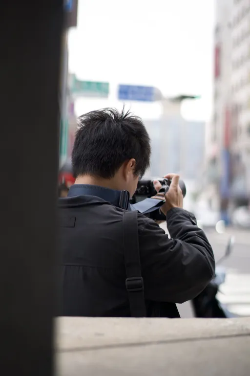

我的未來夢想是成為一位專業的攝影師，在一家攝影公司工作， 專注於人像、婚禮與活動紀錄的拍攝，也可以在閒暇時記錄生活， 上傳到個人社群平台爭取曝光。透過鏡頭捕捉情感與故事， 把平凡的日常轉化成珍貴的回憶。我希望未來能開設自己的攝影工作室， 建立屬於自己的攝影品牌。

雖然我未來想成為一位專業攝影師，但在短期內我希望先把攝影當成興趣來摸索與累積經驗。
我計畫多拍攝不同主題的照片，包括人像、街景、風景甚至動態影片，
並嘗試使用不同器材，像是單眼相機、手機、空拍機與口袋三軸穩定器。
除了單純拍攝，我也會深入學習各種拍攝技巧與相機參數設定，
藉此了解不同風格與技術上的差異，建立自己的攝影手法。
同時，我也想試水溫探索「市場口味」與「自己的口味」，
不只單純拍自己喜歡的，也會嘗試拍一些大眾偏好的主題，
看看哪些作品最能引起共鳴與回饋，找出適合發展的方向與風格定位。
我最感興趣的事就是攝影，無論是拿著單眼在街上或者校園捕捉各種瞬間，
還是用空拍機拍下壯觀的風景畫面，每一次快門的背後都是一種對畫面感覺上的記錄。
我特別喜歡拍攝自然風光下的各種場景與日常生活片段，並嘗試將照片透過後製調色呈現出自己的風格。
目前我也有經營一個小小的攝影帳號，雖然粉絲還不多，但我享受那種慢慢累積作品、分享興趣的過程。
透過這個帳號，我也會觀察各個人的反應，看看哪些風格或主題比較受歡迎，也當作一種「練習與試水溫」的平台。
👉 歡迎來看看我的攝影帳號： @jn_tg97
儘管我對攝影充滿熱情，但目前也面臨不少挑戰。
最大的困擾是對攝影技巧的掌握還不夠穩定，
在拍攝過程中常常遇到拍不出預期效果的情況，
尤其是在控制光線和後製方面還需要大量練習。
另外，攝影器材的選擇也讓我有一點困惑，因為每種設備都有不同的優缺點，很難取得一個平衡。
此外，拍攝和經營社群帳號的流量也讓我感到焦慮，
害怕無法快速累積觀眾與認同。